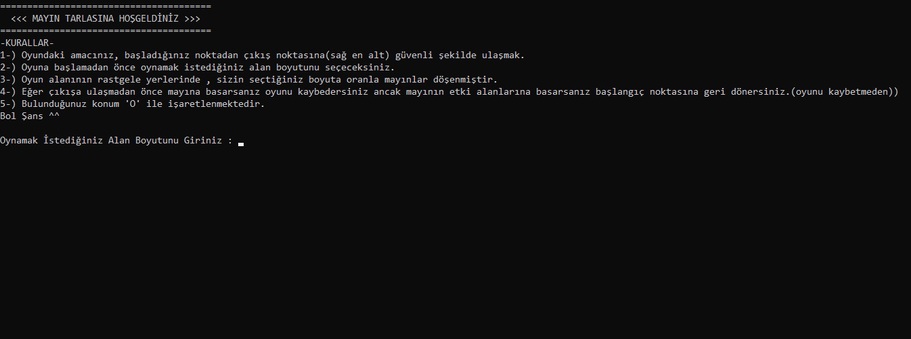
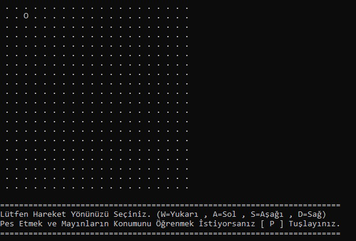
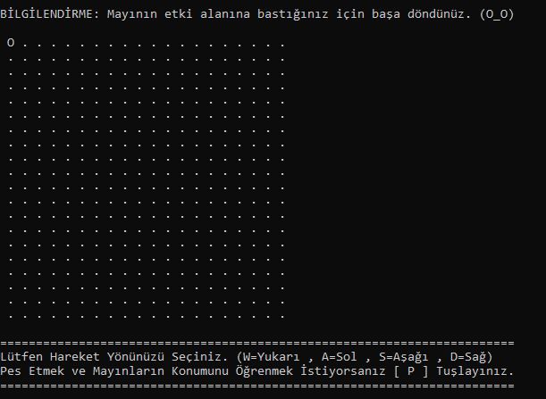
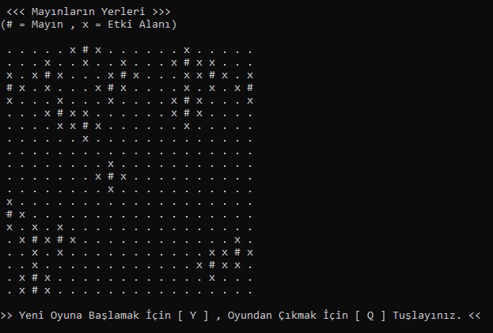
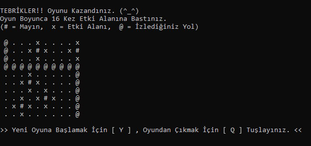

Mayın Tarlası Oyunu





Açıklama
Klasik mayın tarlasına farklı bir yaklaşım getiren bu oyunda amaç sadece mayınlardan kaçmak değil; aynı zamanda başlangıçtan bitişe doğru stratejik bir yol izlemek. Etki alanlarına dikkat ederek ilerlemeyi gerektiren bu konsol tabanlı oyun, refleks ve planlamayı bir araya getiriyor. Basit arayüzüne rağmen düşündüren yapısıyla dikkat çeken bir deneyim sunuyor.
NOT: Oyuna girince kurallar ve bilgilendirmeler mevcut.
Özellikler
- Klavye kontrollü labirent tarzı oyun
- Rastgele yerleştirilen mayın sistemi
- Temasa bağlı başlangıca dönüş mekanizması
- Mayına temasla oyunun sonlanması
- Konsol tabanlı minimal arayüz
- Farklı zorluk seviyeleri için genişletilebilir yapı
- Oyunu kapatmadan yeni oyuna başlayabilme
- Oyun boyunca kaç kez mayının etki alanına basıldığının takip sistemi
- Oyun boyunca kullanıcının gittiği yolu hafızada tutma sistemi
- Oyun bitince yeniden aynı kullanıcı adlarıyla hızlı başlatabilme